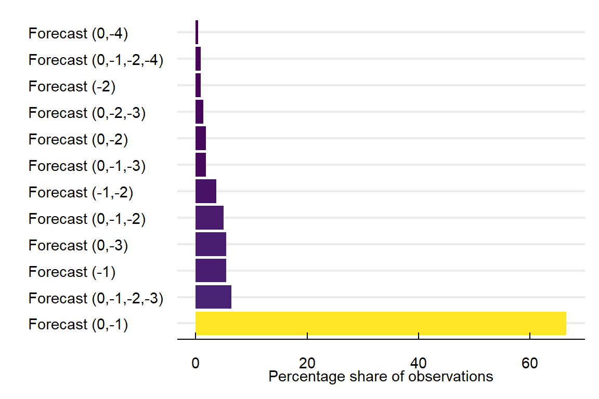

This page presents an overall description of the data sets I use to analyze the effect of New York City Air Quality Health Advisories on school absences.
Researchers can access the data I use to generate these files in the dropbox repository
I obtain data on school absences from the NYC open data-portal website. Table 1 shows the structure of the data. There are 3,339,158 observations in the panel with 1,854 unique school identifiers. The data set spans between Jan 2006 and Dec 2018. It contains the school’s id, the observation date, and the total number of enrolled, present, absent, and released students. It also includes a categorical variable indicating if an abnormal event affected school absences on that date, e.g., extreme weather events like blizzards or hurricanes. I further obtain data on the location of each school. Table 2 contains the school’s type, id, longitude, latitude, tract, neighbourhood, and borough. Table 3 presents socio-demographic data obtained from the New York State Department of Education (NYSDE). The table contains the school’s id, year of observation, count of enrolled students, and the share of female, male, Asian, Hispanic, Black, and White students. Other variables include the share of students with disabilities, learning English, qualifying for free or reduced price lunch, being eligible for human resources administration benefits (poverty), or facing economic hardship (eni). Finally, Table Table 4 contains the school id, the year of observation (only available from 2014), the share of students passing the English Language Art (ELA) and Mathematics (math) tests, and the percentage of fourth-year and sixth-year graduates.
| id | date | SchoolYear | enrolled | present | absent | released | DayType |
|---|---|---|---|---|---|---|---|
| 01M015 | 2006-09-05 | 2006-2007 | 252 | 226 | 26 | 0 | NormalDay |
| 01M015 | 2006-09-06 | 2006-2007 | 248 | 227 | 21 | 0 | NormalDay |
| 01M015 | 2006-09-07 | 2006-2007 | 245 | 228 | 17 | 0 | NormalDay |
| id | lon | lat | tract | nta | ntacode | boro | SchoolType |
|---|---|---|---|---|---|---|---|
| 01M015 | -73.97875 | 40.72207 | 002601 | Lower East Side | MN28 | Manhattan | Elementary |
| 01M019 | -73.98450 | 40.73001 | 004000 | East Village | MN22 | Manhattan | Elementary |
| 01M020 | -73.98631 | 40.72131 | 003001 | Chinatown | MN27 | Manhattan | Elementary |
| Notes: lon = Longitude, lat = Latitude, tract = US Census Tract, nta = neighborhood, boro = borough, SchholType = type of school |
Show the Code
# Show the data set
kbl(head(dem, 3)) %>%
kable_classic(full_width = F, html_font = "Cambria") %>%
kable_styling(bootstrap_option = c("hover")) |>
column_spec(c(1), italic = T, color = "DarkBlue") %>%
footnote(general = "id refers to School ID and students to the count of enrolled students in that school and year combinations. Each of the other columns contains the percentage of students within each category, e.g., female refers to the share of female students in the school. The poverty column refers to the share of students qualifying for free or reduced-price lunch or eligible for Human Resources Administration benefits. The eni column refers to the share of students facing economic hardship.", general_title = "Notes:", footnote_as_chunk = T)| id | year | students | female | male | asian | hispanic | black | white | other | disabilities | EnglishLearners | poverty | eni |
|---|---|---|---|---|---|---|---|---|---|---|---|---|---|
| 01M015 | 2011 | 189 | 48.7 | 51.3 | 6.3 | 57.7 | 33.3 | 2.1 | 0.5 | 27.5 | 11.6 | 100 | NaN |
| 01M015 | 2012 | 177 | 51.4 | 48.6 | 8.5 | 52.5 | 35.6 | 1.7 | 1.7 | 31.1 | 11.9 | 100 | NaN |
| 01M015 | 2013 | 190 | 48.9 | 51.1 | 4.7 | 54.7 | 37.9 | 1.6 | 1.1 | 34.2 | 10.0 | 95 | NaN |
| Notes: id refers to School ID and students to the count of enrolled students in that school and year combinations. Each of the other columns contains the percentage of students within each category, e.g., female refers to the share of female students in the school. The poverty column refers to the share of students qualifying for free or reduced-price lunch or eligible for Human Resources Administration benefits. The eni column refers to the share of students facing economic hardship. |
Show the Code
# Show the data set
kbl(head(prof, 3)) %>%
kable_classic(full_width = F, html_font = "Cambria") %>%
kable_styling(bootstrap_option = c("hover")) |>
column_spec(c(1), italic = T, color = "DarkBlue") %>%
footnote(general = "id refers to School ID and. Each of the other columns contains the percentage of students within each category; e.g., ela refers to the share of students passing the English Learning Art test. The math column refers to the share of students passing the Mathematics test. And the Graduates4th and 6th columns refer to the share of graduates in each year respectively.", general_title = "Notes:", footnote_as_chunk = T)| id | year | ela | math | Graduates4th | Graduates6th |
|---|---|---|---|---|---|
| 17K002 | 2014 | 23.1 | 23.1 | NA | NA |
| 84K704 | 2014 | 16.7 | 16.7 | NA | NA |
| 75K141 | 2014 | NA | NA | NA | NA |
| Notes: id refers to School ID and. Each of the other columns contains the percentage of students within each category; e.g., ela refers to the share of students passing the English Learning Art test. The math column refers to the share of students passing the Mathematics test. And the Graduates4th and 6th columns refer to the share of graduates in each year respectively. |
Forecasts of the air quality index
The data on the air quality index (AQI) forecasts come from the New York State Department of Environmental Conservation (NYSDEC).1 Table 5 contains a sample of the raw data. It includes the issue date, forecast date, emission lag, and forecasted value of ozone (o3), fine particulate matter (pm25), and the air quality index (AQI). The issue date is the date the NYSDEC estimated the forecast, and the emission lag is the difference between the issue and forecast dates.
| IssueDate | ForecastDate | EmissionLag | o3 | pm25 | aqi |
|---|---|---|---|---|---|
| 2007-12-31 | 2008-01-01 | -1 | NA | 65 | 65 |
| 2007-12-31 | 2008-01-02 | -2 | NA | 40 | 40 |
It is relevant to distinguish between the issue and forecast dates. The issue date is the date that the NYSDEC performs the forecast. the forecast date is the date of the forecast. For instance, the NYSDEC can forecast an AQI value of 105 for May 1st on April 29th. In this example, April 29th is the issue date, and May 1st the forecast date. It is worth noting that forecasts can have different issue dates. For instance, there can be three forecasts for January 1st.
Table 6 contains a series of dummy and categorical variables to understand the nature of each forecast. The column SingleForecast indicates situations when only one issued forecast for that particular date exists. For example, if there were two forecasts for January 1st, one on December 30th and the other on the 31st, the value of this column would be zero. The ForecastType is a categorical variable that indicates the structure of issued forecasts for that particular date, e.g., Forecast (0, -2) means that there was a forecast issued at \(t = 0\) and \(t = -2\). The SameDay variable is equal to one if the issue and forecast dates occur on the same day. The same logic holds for NextDay, TwoDays, ThreeDays, and FourDays. For instance, a value of 1 in the FourDays column occurs when the issue date is four days before the forecast.
| IssueDate | ForecastDate | aqi | SingleForecast | ForecastType | SameDay | NextDay | TwoDays | ThreeDays | FourDays |
|---|---|---|---|---|---|---|---|---|---|
| 2007-12-31 | 2008-01-01 | 65 | 1 | Forecast (-1) | 0 | 1 | 0 | 0 | 0 |
| 2007-12-31 | 2008-01-02 | 40 | 0 | Forecast (0,-2) | 0 | 0 | 1 | 0 | 0 |
Table 7 includes a set of variables on the emission of an air quality alert (AQA). The alert column is an indicator variable equal to one if the AQI forecast exceeds one hundred units. The FullAlert column is one when all forecasts on that date predict an alert. SingleAlert is one if only one forecast is higher than one hundred units. OnlySameDayAlert is one when there is only one same-day forecast. And NextAndSameDayAlert is equal to one if there were two issues for the same forecast – one on the date of the forecast and the other one day before.
| IssueDate | ForecastDate | aqi | alert | FullAlert | SingleAlert | OnlySameDayAlert | NextAndSameDayAlert | TwoDaysSingleAlert |
|---|---|---|---|---|---|---|---|---|
| 2007-12-31 | 2008-01-01 | 65 | 0 | 0 | 0 | 0 | 0 | 0 |
| 2007-12-31 | 2008-01-02 | 40 | 0 | 0 | 0 | 0 | 0 | 0 |
Figure 1 and Figure 2 show the share of observations with specific combinations of issued forecasts. For the full sample 63% of forecasts were issued one day before and at the date of the alert. For the sub-sample of days with an air quality alert, this number increases to 67%. This combination of different forecasts raises one clear issue; if we want to assign one single value per date, which one of the forecasts should we choose? For this, use the following algorithm:
- For the days without an alert, we select the AQI forecast closest to \(t\). For instance, if the AQI value for January 1st has one forecast on December 31st and another on December 30th, we select the 31st as the value of the forecasted AQI.
- For days when there is an alert, and all forecasts imply an AQI value higher than 100 units, we choose the forecast closest to \(t\)
- When there is a discrepancy between two forecasts regarding the existence of an AQA, we choose the highest. For instance, the forecast at \(t = 0\) implies an AQI value of 93 and the one at \(t = 1\) a value of 101. In this situation, we will assign the value of 101.

Table 8 shows the first rows of the final data set on the AQU forecast. In it date is the date of the forecast. ForecastType is the type of forecast as previously defined. pm25, o3, and aqi are the forecasted values of fine particulate matter, ozone, and the air quality index. alert is an indicator variable equal to one when the AQI is larger than 100. I also include a set of indicator variables on the structure of the forecast, i.e., was it a single alert? Did all the forecasts point to the emission of an alert?
Show the Code
# Show the data set
kbl(head(filter(AqiForecast, alert == 1), 3)) %>%
kable_classic(full_width = F, html_font = "Cambria") %>%
kable_styling(bootstrap_option = c("hover")) |>
column_spec(c(1), italic = T, color = "DarkBlue") | date | ForecastType | pm25 | o3 | aqi | alert | SingleAlert | FullAlert | OnlySameDayAlert | NextAndSameDayAlert | TwoDaysSingleAlert |
|---|---|---|---|---|---|---|---|---|---|---|
| 2008-06-07 | Forecast (-1) | 92 | 114 | 114 | 1 | 1 | 1 | 0 | 0 | 0 |
| 2008-06-08 | Forecast (-2) | 80 | 101 | 101 | 1 | 1 | 1 | 0 | 0 | 1 |
| 2008-06-09 | Forecast (0,-3) | NA | 105 | 105 | 1 | 0 | 1 | 0 | 0 | 0 |
Data on the air quality index
I obtain AQI measurements from the Environmental Protection Agency (EPA) pre-generated data files. At each point, the AQI for county \(i\) at time \(t\) is the maximum AQI across all stations and measured contaminants on that day. Table 9 shows the structure of the AQI data. It contains the observation date and the AQI values for each city borough.
Show the Code
# Show the data set
kbl(head(aqi, 5), booktabs = T) %>%
kable_classic(full_width = F, html_font = "Cambria") %>%
kable_styling(bootstrap_option = c("hover")) |>
column_spec(c(1), italic = T, color = "DarkBlue")| date | RealAqi | BronxAQI | BrooklynAQI | ManhattanAQI | QueensAQI | StatenIslandAQI |
|---|---|---|---|---|---|---|
| 2008-01-01 | 67 | 67 | 57 | 67 | 60 | 58 |
| 2008-01-02 | 55 | 52 | 45 | 55 | 45 | 43 |
| 2008-01-03 | 50 | 43 | 39 | 50 | 39 | 37 |
| 2008-01-04 | 71 | 67 | 62 | 71 | 64 | 57 |
| 2008-01-05 | 91 | 88 | 80 | 91 | 80 | 76 |
Economic and demographic covariates
I collect different economic, demographic, and health covariates at the neighbourhood level from two primary sources; for socio-demographic variables, we use public data from the American Community Survey between 2012-2016. For the health data, we use the information on children asthma-related hospitalization and ER admissions from the New York State Department of Health.
Show the Code
kbl(head(econ, 5)) %>%
kable_classic(full_width = F, html_font = "Cambria") %>%
kable_styling(bootstrap_option = c("hover")) |>
column_spec(c(1), italic = T, color = "DarkBlue") %>%
footnote(general = "nta = Name of the neighborhood, ntacode = Code of the neighborhood,
boro = Name of the borough, FemaleLF = share of working age women at work,
MeanIncome = Average income, MedianIncome = Median Income" , general_title = "Notes:", footnote_as_chunk = T)| nta | ntacode | boro | FemaleLF | MeanIncome | MedianIncome |
|---|---|---|---|---|---|
| Bath Beach | BK27 | Brooklyn | 52.6 | 75950 | 58243 |
| Bay Ridge | BK31 | Brooklyn | 57.8 | 86319 | 63539 |
| Bedford | BK75 | Brooklyn | 62.9 | 62616 | 39970 |
| Bensonhurst East | BK29 | Brooklyn | 54.6 | 65715 | 48097 |
| Bensonhurst West | BK28 | Brooklyn | 54.5 | 70198 | 51035 |
|
Notes: nta = Name of the neighborhood, ntacode = Code of the neighborhood, boro = Name of the borough, FemaleLF = share of working age women at work, MeanIncome = Average income, MedianIncome = Median Income |
Show the Code
kbl(head(dem, 5)) %>%
kable_classic(full_width = F, html_font = "Cambria") %>%
kable_styling(bootstrap_option = c("hover")) |>
column_spec(c(1), italic = T, color = "DarkBlue") %>%
footnote(general = "nta = Name of the neighborhood, ntacode = Code of the neighborhood,
boro = Name of the borough, ShareHisp = share of Hispanic persons,
ShareWhite = Share of white persons, ShareBlack = Share of black persons", general_title = "Notes:", footnote_as_chunk = T)| nta | ntacode | boro | ShareHisp | ShareWhite | ShareBlack |
|---|---|---|---|---|---|
| Bath Beach | BK27 | Brooklyn | 17.7 | 43.7 | 1.2 |
| Bay Ridge | BK31 | Brooklyn | 17.9 | 63.4 | 1.9 |
| Bedford | BK75 | Brooklyn | 19.5 | 35.1 | 40.6 |
| Bensonhurst East | BK29 | Brooklyn | 12.3 | 46.5 | 0.8 |
| Bensonhurst West | BK28 | Brooklyn | 14.6 | 42.7 | 0.9 |
|
Notes: nta = Name of the neighborhood, ntacode = Code of the neighborhood, boro = Name of the borough, ShareHisp = share of Hispanic persons, ShareWhite = Share of white persons, ShareBlack = Share of black persons |
Show the Code
kbl(head(soc, 5)) %>%
kable_classic(full_width = F, html_font = "Cambria") %>%
kable_styling(bootstrap_option = c("hover")) |>
column_spec(c(1), italic = T, color = "DarkBlue") %>%
footnote(general = "nta = Name of the neighborhood, ntacode = Code of the neighborhood, boro = Name of the borough,
SingleParents = share of single-parent households, GrandParentsAid = share of families with help from grandparents,
LessThanHighschool = share of persons that did not complete high school, Bachelor = share of persons with a bachelor's degree,
EnglishOnly = share of persons that only communicate in English",
general_title = "Notes:", footnote_as_chunk = T)| nta | ntacode | boro | SingleParents | GrandParentsAid | LessThanHighschool | Bachelor | EnglishOnly |
|---|---|---|---|---|---|---|---|
| Bath Beach | BK27 | Brooklyn | 26.2 | 3.1 | 23.0 | 33.6 | 31.0 |
| Bay Ridge | BK31 | Brooklyn | 24.1 | 1.8 | 13.8 | 46.4 | 49.0 |
| Bedford | BK75 | Brooklyn | 51.1 | 3.9 | 21.7 | 32.2 | 58.9 |
| Bensonhurst East | BK29 | Brooklyn | 27.6 | 3.9 | 25.1 | 30.2 | 24.3 |
| Bensonhurst West | BK28 | Brooklyn | 26.3 | 2.1 | 28.1 | 26.2 | 26.1 |
|
Notes: nta = Name of the neighborhood, ntacode = Code of the neighborhood, boro = Name of the borough, SingleParents = share of single-parent households, GrandParentsAid = share of families with help from grandparents, LessThanHighschool = share of persons that did not complete high school, Bachelor = share of persons with a bachelor's degree, EnglishOnly = share of persons that only communicate in English |
Show the Code
kbl(head(hosp, 5)) %>%
kable_classic(full_width = F, html_font = "Cambria") %>%
kable_styling(bootstrap_option = c("hover")) |>
column_spec(c(1), italic = T, color = "DarkBlue") %>%
footnote(general = "nta = Name of the neighborhood, ntacode = Code of the neighborhood,
HospChildren = Number of children going to the hospital because of asthma,
HospChildRate = Rate of children going to the hospital because of asthma (per 10,000),
SmallSampleIndicator = Indicator variable equal to one if the sample is too small",
general_title = "Notes:", footnote_as_chunk = T)| year | nta | ntacode | HospChildren | HospChildrenRate | SmallSampleIndicator |
|---|---|---|---|---|---|
| 2014-2016 | Allerton-Pelham Gardens | BX31 | 9 | 18.3 | 0 |
| 2014-2016 | Annadale-Huguenot-Prince's Bay-Eltingville | SI01 | NA | 2.9 | 1 |
| 2014-2016 | Arden Heights | SI48 | NA | 2.3 | 1 |
| 2014-2016 | Astoria | QN70 | 8 | 10.1 | 0 |
| 2014-2016 | Auburndale | QN48 | 0 | 0.0 | 0 |
|
Notes: nta = Name of the neighborhood, ntacode = Code of the neighborhood, HospChildren = Number of children going to the hospital because of asthma, HospChildRate = Rate of children going to the hospital because of asthma (per 10,000), SmallSampleIndicator = Indicator variable equal to one if the sample is too small |
Show the Code
kbl(head(er, 5)) %>%
kable_classic(full_width = F, html_font = "Cambria") %>%
kable_styling(bootstrap_option = c("hover")) |>
column_spec(c(1), italic = T, color = "DarkBlue") %>%
footnote(general = "nta = Name of the neighborhood, ntacode = Code of the neighborhood,
ErAdmissions = Number of children going to the ER because of asthma,
HospChildRate = Rate of children going to the ER because of asthma (per 10,000),
SmallSampleIndicator = Indicator variable equal to one if the sample is too small", general_title = "Notes:", footnote_as_chunk = T)| year | nta | boro | ntacode | ErAdmissions | ErAdmissionRate | SmallSampleIndicator |
|---|---|---|---|---|---|---|
| 2014-2016 | Allerton-Pelham Gardens | Bronx | BX31 | 115 | 225.5 | 0 |
| 2014-2016 | Annadale-Huguenot-Prince's Bay-Eltingville | Staten Island | SI50 | 14 | 30.3 | 0 |
| 2014-2016 | Arden Heights | Staten Island | SI54 | 14 | 33.6 | 0 |
| 2014-2016 | Astoria | Queens | QN17 | 79 | 104.1 | 0 |
| 2014-2016 | Auburndale | Queens | QN14 | 11 | 38.7 | 0 |
|
Notes: nta = Name of the neighborhood, ntacode = Code of the neighborhood, ErAdmissions = Number of children going to the ER because of asthma, HospChildRate = Rate of children going to the ER because of asthma (per 10,000), SmallSampleIndicator = Indicator variable equal to one if the sample is too small |
Weather
Show the Code
weather = read_rds(paste0(file, "02_GenData/03_weather/NycGsod.rds"))I obtain weather data from the Global Surface Summary of the Day provided by the US National Centres for Environmental Information (NCEI). Table Table 15 shows the structure of the weather data. For each date between January 2006 and December 2018, I have daily average, minimum, and maximum temperature, atmospheric pressure, wind speed, precipitation, and relative humidity.
Show the Code
# Show the data set
kbl(head(weather, 2)) %>%
kable_classic(full_width = F, html_font = "Cambria") %>%
kable_styling(bootstrap_option = c("hover")) |>
column_spec(c(1), italic = T, color = "DarkBlue") %>%
footnote(general = str_wrap("tmp = Average temperature, MinTmp = Minimum temperature,
MaxTmp = Maximum temperature, dew = Dew point, atm = Atmospheric Pressure,
wsp = Wind speed, rain = Precipitation, rh = Relative humidity.
All temperatures in celsius and precipitation in millimeters", 75), general_title = "Notes:", footnote_as_chunk = T)| date | tmp | MinTmp | MaxTmp | dew | atm | wsp | rain | rh |
|---|---|---|---|---|---|---|---|---|
| 2006-01-01 | 2.08 | -0.28 | 5.82 | -1.07 | 12.20 | 1.8 | 4.45 | 79.7 |
| 2006-01-02 | 5.38 | 0.98 | 8.05 | 0.32 | 20.27 | 1.9 | 1.78 | 70.1 |
|
Notes: tmp = Average temperature, MinTmp = Minimum temperature, MaxTmp = Maximum temperature, dew = Dew point, atm = Atmospheric Pressure, wsp = Wind speed, rain = Precipitation, rh = Relative humidity. All temperatures in celsius and precipitation in millimeters |
Footnotes
The data is not publicly available. Instead, we sent an email to the NYSDEC asking them to provide the forecasted values under the freedom of information act. They were kind enough to give the entirety of predicted dates between 2008 and 2018↩︎